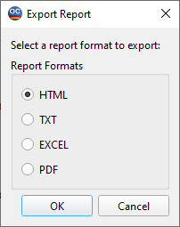

Export
The Export dialog box allows you to customize the output format for the report.

HTML checkbox allows you to export the report in .html format.
TEXT checkbox allows you to export the report in .txt format.
EXCEL checkbox allows you to export the report in .xslx format.
PDF checkbox allows you to export the report in .pdf format.